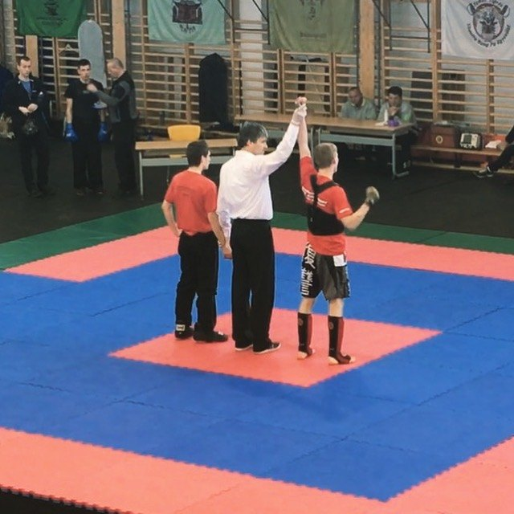

01
Začátky
Pohyb mě provází odmala
Nezačal jsem u jednoho sportu a nezůstal jen u fitka. Prošel jsem tenisem, házenou, fotbalem a postupně si našel cestu k bojovým sportům.
Právě různorodost sportů mě naučila vnímat tělo jako celek. Neřeším jen svaly, ale i koordinaci, stabilitu, mobilitu a to, jak se člověk hýbe mimo posilovnu.